{kind=link}
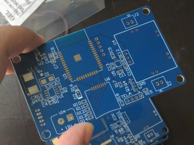
Amplificador Bluetooth
PCB desenvolvida para um sistema de áudio com recepção e controle via módulo Bluetooth.

Eu sou uma engenheira eletrônica apaixonada por criar projetos inovadores, desde o design da PCB no Altium Designer até a programação do firmware em PlatformIO e ESP-IDF. Com vasta experiência em microcontroladores e sistemas embarcados, busco transformar ideias em hardware funcional. Formada em Engenharia Elétrica pela UEL.

PCB desenvolvida para um sistema de áudio com recepção e controle via módulo Bluetooth.
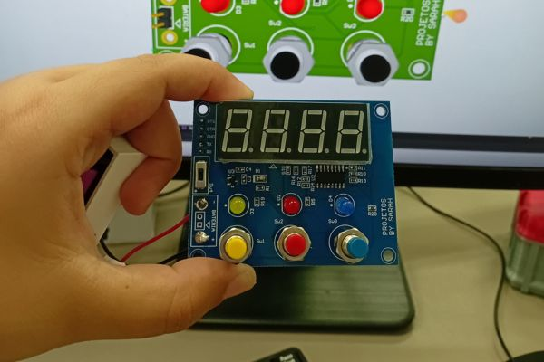
Projeto feito utilizando ESP32 com conexão Bluetooth e módulo Lo-Ra para ser controlado a distância, o cronômetro funciona em modo regressivo e progressivo. Eu projetei a placa e Programei em C.
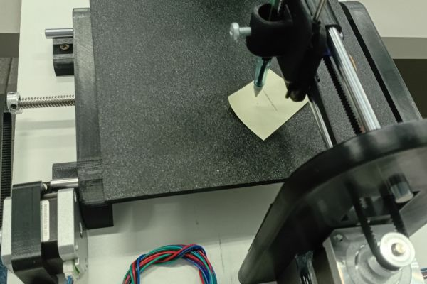
Esse Projeto foi feito com Arduino Uno, uma Plotter 2D com motores de passo, a placa foi projetada para os drivers do motor e a programação foi feita em C com comandos mandados por Gcode.
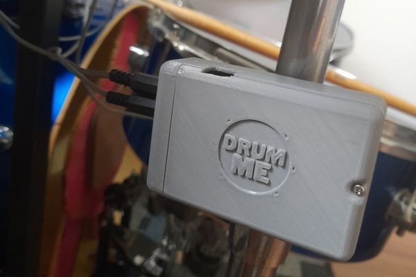
Esse é meu módulo de Bateria Eletrônica, projetado e montado com componentes PTH para fácil montagem. Ao conectar com o computador o Arduino Micro Leonardo é reconhecido como emulador MIDI sendo possível tocar bateria eletrônica virtual sem cabo MIDI virtual.
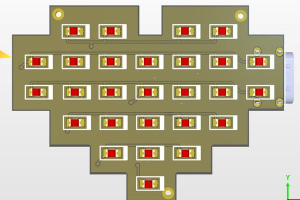
Uma PCB divertida em formato de coração, na button layer tem um circuito oscilador que faz os LEDS piscarem de baixo para cima.
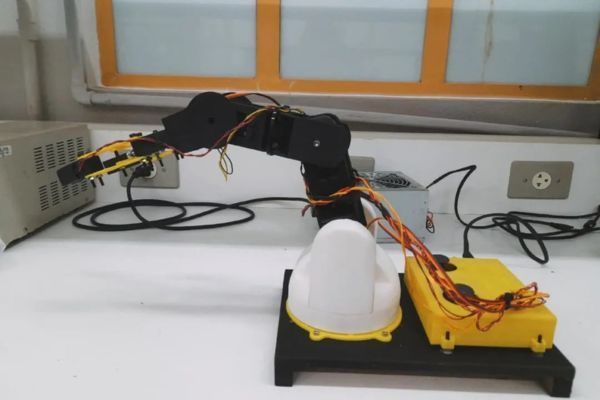
Esse Projeto foi meu Projeto de TCC, um Braço Robótico com 4dof que funciona com 2 joysticks cada eixo controlando um servo motor.
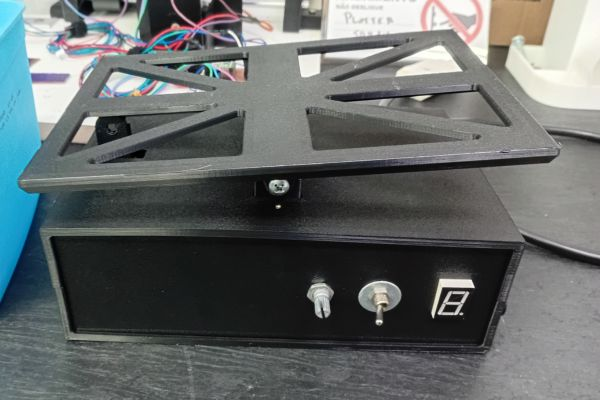
Esse equipamento agita a PCB para a corrosão pelo percloreto de ferro.
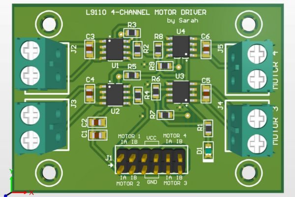
Esse é um módulo criado para ser uma ponte H de carrinho de 4 rodas.
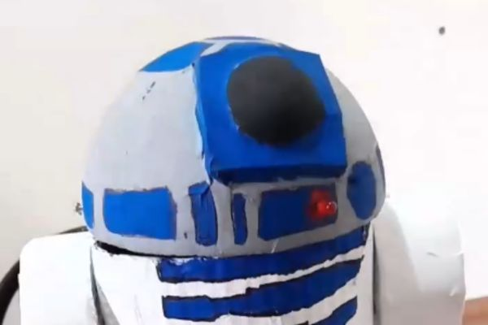
Esse é a minha replica do R2 D2 dos cinemas, ele funciona mesmo e fala, veja meu video no Instagram e TikTok
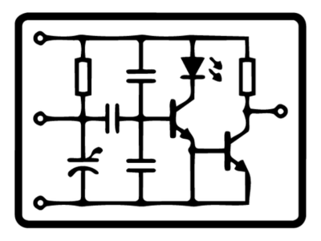
Desenvolvimento e esquema de projetos com microcontroladores e sistemas embarcados.
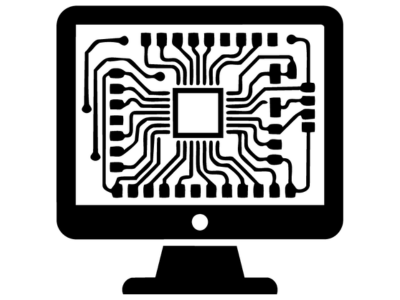
Design de placas de circuito impresso (PCBs) e preparação para fabricação.
Desenvolvimento de firmware para microcontroladores e sistemas embarcados.
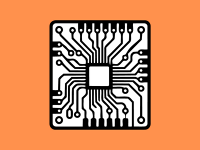
Montagem, validação e depuração de circuitos eletrônicos e protótipos.
Criação de cases para placas e projetos.

Essa é a placa Drumme que pode ser usada para você soldar seu proprio módulo de bateria eletrônica.
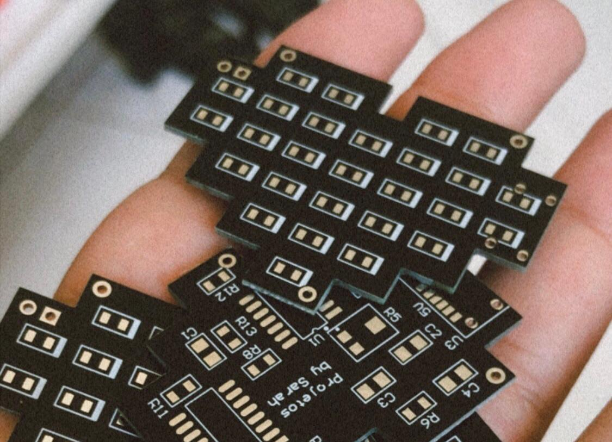
Placa profissional para montagem. Circuito oscilador analógico (sem código), ideal para treino de solda e estudos.
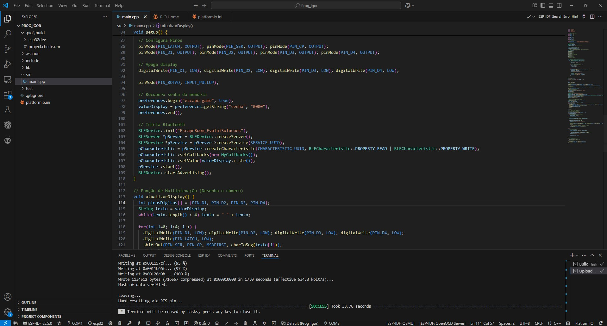
Saia das placas de desenvolvimento! Aprenda a usar o conversor FTDI e o circuito de boot para programar o chip ESP32 diretamente na sua PCB customizada, usando o framework profissional ESP-IDF em C/C++.
{kind=link}
{kind=link}
{kind=link}
{kind=link}
{kind=link}
{kind=link}
{kind=link}
{kind=link}
{kind=link}